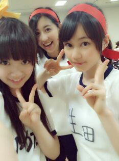
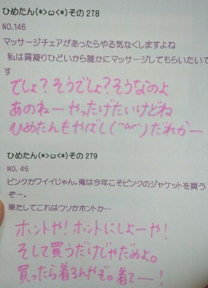

| 2013/07 01 Mon | ひめたん(*>ω<*)そ の311 |

先にアナウンスしておきます
次回からテスト終わるまで
ひめたん大図鑑をお届けする予定です( ω )
ごめんね。
ちょこっと日記も書くかもー
ほら、ちょうど今週は発売週だしっ
CD聴きながら待っててね！
先週のスパカン！
聞いていただけましたか？
感想なんかコメント書いてくれた
方もいらっしゃいましてーもーほんとに
嬉しかったですー///
ムロツヨシさん
めちゃめちゃめーちゃー素敵な方でした♪
あーゆーラジオは
初めてだったので
ちょっと緊張してたんだけども
とっても優しくしていただいて(〃ω〃)
これからも毎週スパカン！聴きますっ
また呼んでくださーいー♪るん
この前は乃木どこの収録に
参加してきましたー
どうかなオンエアされるのいつかなー
みてみてねーよろしくねー！
あっお手紙とプレゼント
受けとりましたっ( ω )
いつもありがとうございますっ
ひめたはねーお手紙読むの好きだからねー
いつもお手紙読むの楽しみなのー♪
あーあのねーそういやねー
昨日はぱぱたちが東京きてたんだよー
ゆーても、テスト前かつ撮影だったから
あんましゆっくりできなかったけど
それでも会えてよかったー(〃ω〃)
あっ
そういやそういや
「扇風機」MV公開されてましたー！
詳しくはオフィシャルサイトへ☆
この撮影も楽しかったので
いつかゆっくりお話したいなー
とりあみてみてーみんなびしょびしょ( ω )
さらに、1stの個人PVが
公開されてますのでー
最近ひめたん好きよーて方も
ずーっとひめたん好きよーて方も
今までひめたん好きだったよーって方も...
ん(´・ω・｀)あれ(´・ω・｀)
とっとりあえずいろんなことしてるから
みてみてねーう
ちゅーしちゃうぞーは
ここから生まれたんだぞー

現役感はでてますでしょうか中３組。
あたしだけチーム違いましたー
でもずーっと仲良し中３組。
ちょっと質問きてたんで
さらっとお答えしとくと
ゼッケンはみんな手書きだよー

お茶会♪
(＊´・ω・＊)
コメント(184)
2013/07/01 23:48